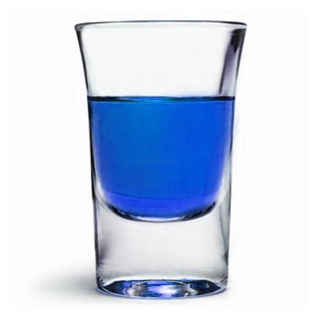

NÆRBØ
Ludvik Bergström and Kåre Seljelid founded NÆRBØ Vodka in 2002. Their signature triple distillation and filtration treatment creates pure, smooth vodka suitable for all occasions. Hundreds of Essence processes were tested until, the perfect combination of bitter to sweet was found, creating a full flavored range of Vodkas. This range has now become the essential support to both our Death and Purity labels.
Our Selection
Renhet - PurityNærbø’s first Vodka, embraces the philosophy of a clean and simple vodka. This pure tasting, full-bodied spirit brings elegance to any festivity. |
Død - DeathDeath appeals to the danger in people. The enticing Black liquid separates the drinkers from the posers, with 60% alcohol concentration, making it one on the strongest percentage vodkas on the market. |
|
|  | Seriøsitet - SeriousnessSeriousness is a hybrid mix of fresh Jergen Blueberries and Lemon Bon Bons. Creating a sweet, slightly tangy blend of berry lemon, appealing to the sweet and sour in all of us. |
Sinne - AngerAnger’s flavor comes from wild molter (cloud berries), which is sourced from the woodlands in the south of Norway. The five-day molter soaking produces a slightly sweet tasting vodka ready to relinquish the anger in you. |
|
Misunne - EnvyEnvy incorporates the acute bitterness of lime, with the sharpness of vodka to create and intoxicating lime infusion. Envy is made through infusing lime zests with the vodka during distillation and Indian Kaffir lime leaves during filtration to create a quaint tang to every drink. |
2002-2013 THE NÆRBØ COMPANY, All RIGHTS RESERVED. ENJOY RESPONSIBLY